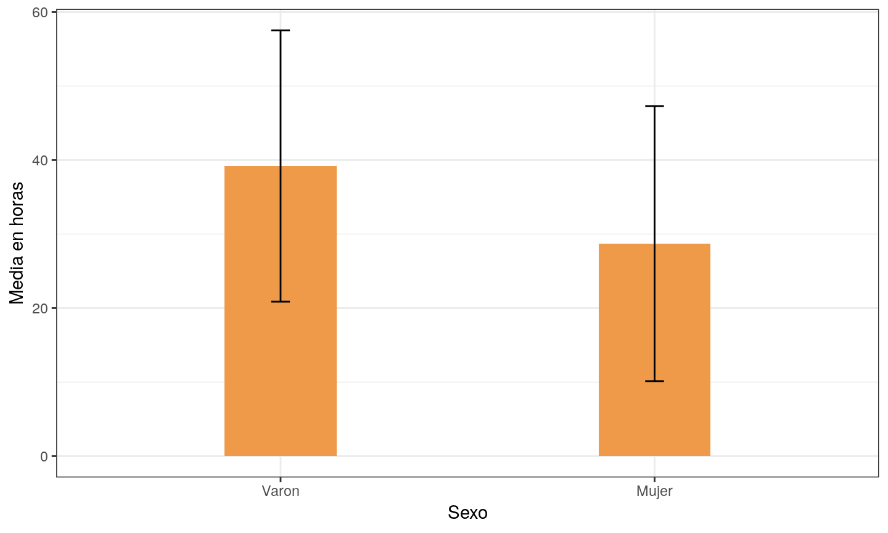
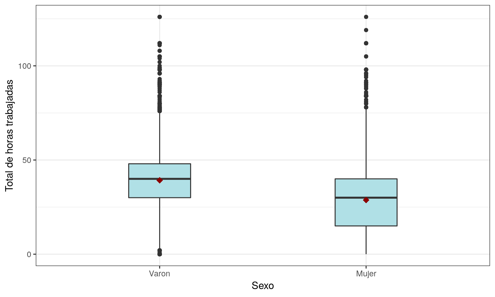
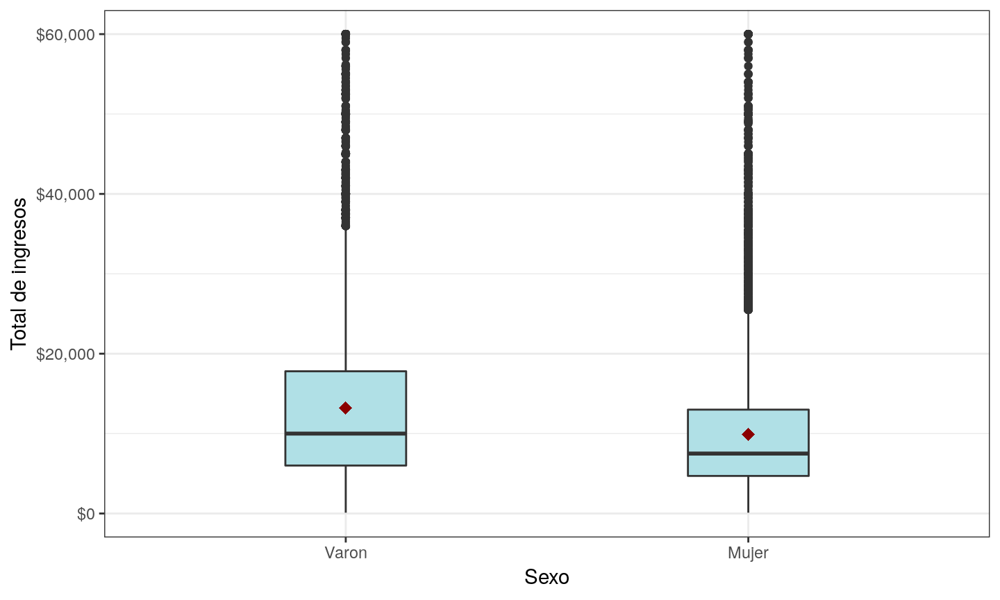
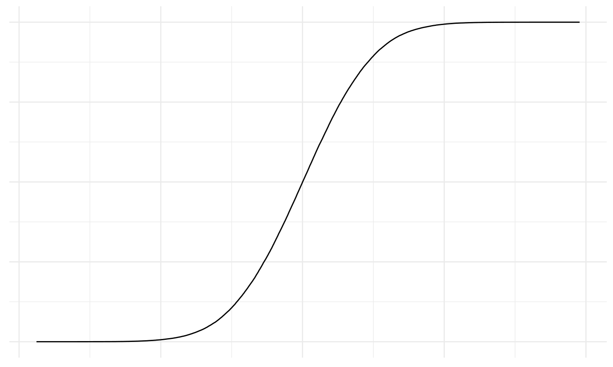
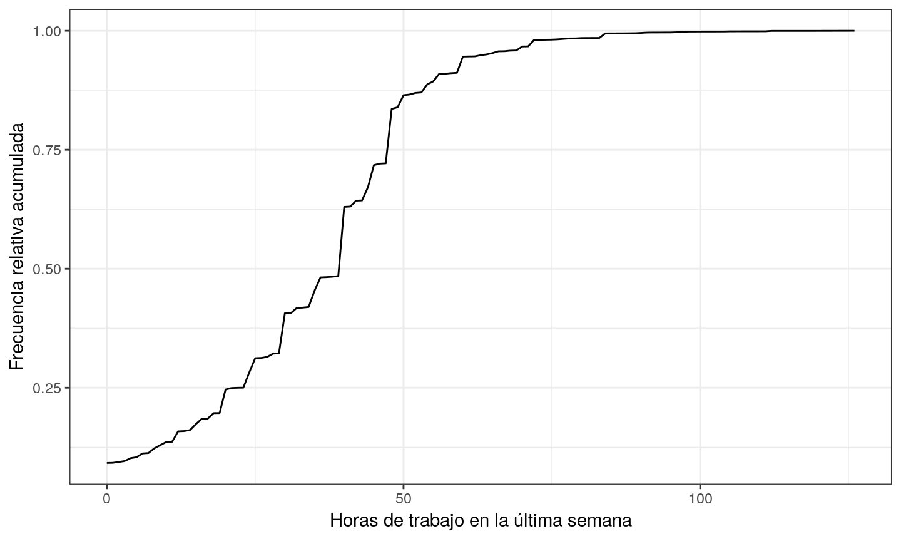

- Los gráficos de barras que vimos anteriormente también se pueden utilizar para representar la media o la mediana.
- Adicionalmente, a los gráficos de barra, se les suele añadir un bigote, que representa alguna medida de dispersión de los datos.
- Veamos un ejemplo. Realicemos un gráfico para la media de horas trabajadas en la última semana(PP3E_TOT) en la EPH del 2do trimestre de 2017. Adicionalmente, agregaremos una barra con un desvío estandar por arriba y por debajo de la media.
04 septiembre, 2019
Gráficos de barras

Gráficos de cajas (boxplots)
- Los gráficos de cajas representan los cuartiles (con la mediana), los valores mínimo y máximo y los valores extremos.
- Llamaremos valores extremos a aquellos valores que se alejen más de 1.5 veces el rango intercuartílico de por debajo del cuartil 1 y por encima del cuartil 3.
- El mínimo y el máximo que se expresan en los bigotes se consideran excluyendo del conjunto de datos los valores extremos.
- Algunas veces también se representa la media en el mismo gráfico.
- https://es.wikipedia.org/wiki/Diagrama_de_caja

Gráfico de cajas
Ejemplo
- Veamos un ejemplo. Realicemos un gráfico de cajas para las horas trabajadas en la última semana(PP3E_TOT) en la EPH del 2do trimestre de 2017.

- Como la base que estamos observando es muy grande, podemos observar muchos valores extremos. Sin embargo, los valores extremos no logran arrastrar a la media, pues la media y la mediana son casi iguales.
- Veamos que pasa con el total de ingresos para los mayores de 18 años, particionado por sexo.
## Scale for 'y' is already present. Adding another scale for 'y', which ## will replace the existing scale.

- En este caso, podemos observar que la cantidad de valores extremos es superior que en el caso anterior.
- Además, la media se ve arrastrada por estos valores.
- Vimos anteriormente que la distribución del total de ingresos es una variable asimétrica a la derecha. Podemos observar esto en el gráfico, pues la media es superior a la mediana.
Ojiva de Galton
- La ojiva de Galton nos muestra de manera muy rápida los percentiles de la variables.
- Tiene una forma aproximada a una S.

- Realicemos una ojiva de Galton para el total de horas trabajadas la última semana para los mayores de 18 años en la EPH del 2do trimestre de 2017.
